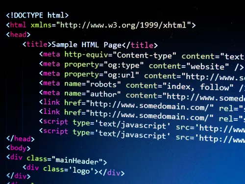

-
Що таке HTML?
HTML не є мовою програмування, тобто вона не має можливості створювати динамічну функціональність. Натомість дає можливість упорядковувати та форматувати документи, подібно до Microsoft Word.Під час роботи з HTML ми використовуємо прості структури коду (теги та атрибути) для розмітки сторінки веб-сайту. Загалом, HTML – це мова розмітки, яка дійсно зрозуміла і проста у вивченні навіть для початківців у створенні веб-сайтів.
Історія виникнення HTML
HTML була винайдена Тімом Бернерсом-Лі, фізиком з дослідницького інституту CERN у Швейцарії та винахідником Інтернету. Він виступив з ідеєю створення системи гіпертексту на основі Інтернету. Гіпертекст означає текст, що містить посилання на інші тексти, до яких глядачі можуть негайно отримати доступ. Першу версію HTML він опублікував у 1991 році, що складається з 18 тегів HTML. З тих пір кожна нова версія мови HTML додавала до розмітки нові теги та атрибути (модифікатори тегів). Наразі існує 140 тегів HTML, хоча деякі з них уже застаріли (не підтримуються сучасними браузерами). Через швидке зростання популярності HTML зараз вважається офіційним веб-стандартом. Специфікації HTML підтримуються та розробляються Консорціумом World Wide Web (W3C). Ви можете перевірити найновіший стан мови в будь-який час на веб-сайті W3C. айбільшим оновленням мови стало введення HTML5 у 2014 р. Було додано до розмітки кілька нових семантичних тегів, які розкривають значення власного вмісту.
-
Як працює HTML?
Документи HTML – це файли, які закінчуються символом . html або .htm розширення. Їх ви можете переглядати за допомогою будь-якого веб-браузера (наприклад, Google Chrome, Safari або Mozilla Firefox). Браузер зчитує файл HTML і відтворює його вміст, щоб користувачі Інтернету могли його переглянути. Зазвичай середній веб-сайт включає в себе кілька різних HTML-сторінок. Наприклад: домашню сторінку, сторінку опис, сторінки контактів. Кожна сторінка HTML складається з набору тегів (їх також називають елементами), які ви можете називати будівельними блоками веб-сторінок. Вони створюють ієрархію, яка структурує вміст за розділами, абзацами, заголовками та іншими блоками вмісту. Більшість елементів HTML мають відкриття та закриття, які використовують синтаксис.
-
Плюси та мінуси HTML
Плюси HTML:
- Широко вживана мова з великою кількістю ресурсів та величезною спільнотою.
- Запускається в кожному веб-браузері.
- З відкритим кодом і абсолютно безкоштовна.
- Чиста і послідовна розмітка.
- Офіційні веб-стандарти підтримуються Консорціумом World Wide Web (W3C).
- Легко інтегрується з серверними мовами, такими як PHP та Node.js.
Мінуси HTML:
- В основному використовується для статичних веб-сторінок. Для динамічної функціональності вам може знадобитися використовувати JavaScript або серверну мову, таку як PHP.
- Це не дозволяє користувачеві реалізовувати логіку. Як результат, усі веб-сторінки потрібно створювати окремо, навіть якщо вони використовують однакові елементи, наприклад, верхній та нижній колонтитули.
- Деякі браузери повільно застосовують нові функції.
- Поведінку браузера іноді важко передбачити (наприклад, старі браузери не завжди відображають новіші теги).
Як пов’язані HTML, CSS та JavaScript?
Хоча HTML є потужною мовою, її недостатньо, щоб створити професійний веб-сайт, що повністю реагує на поведінку користувача. Ми можемо використовувати її лише для додавання текстових елементів та створення структури вмісту.
Однак HTML надзвичайно добре працює з двома іншими мовами інтерфейсу: CSS (каскадні таблиці стилів) та JavaScript. Разом вони можуть досягти багатого в плані користувацького досвіду та реалізувати розширені функції.
- CSS відповідає за такі стилі, як фон, кольори, макети, інтервали та анімація.
- JavaScript дозволяє додавати динамічні функції, такі як повзунки, спливаючі вікна та фотогалереї.
Подумайте про HTML як людину, про CSS як про одяг, а про JavaScript як про рух та манеру.
ЩО ТАКЕ HTML? ПОЯСНЮЄМО ОСНОВИ.

Ви хочете дізнатися що таке html?
HTML розшифровується як мова розмітки гіпертексту. Вона дозволяє користувачеві створювати та структурувати розділи, абзаци, заголовки, посилання та цитати для веб-сторінок та програм.